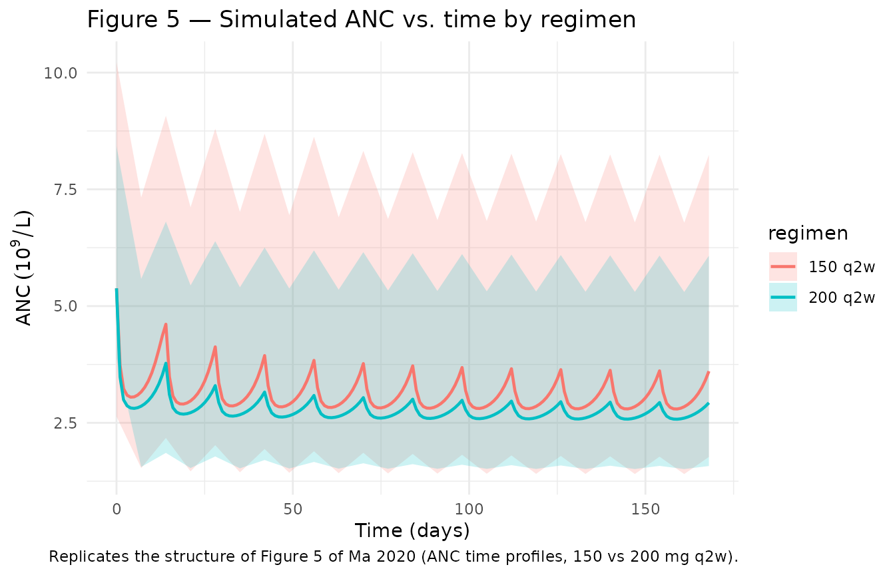
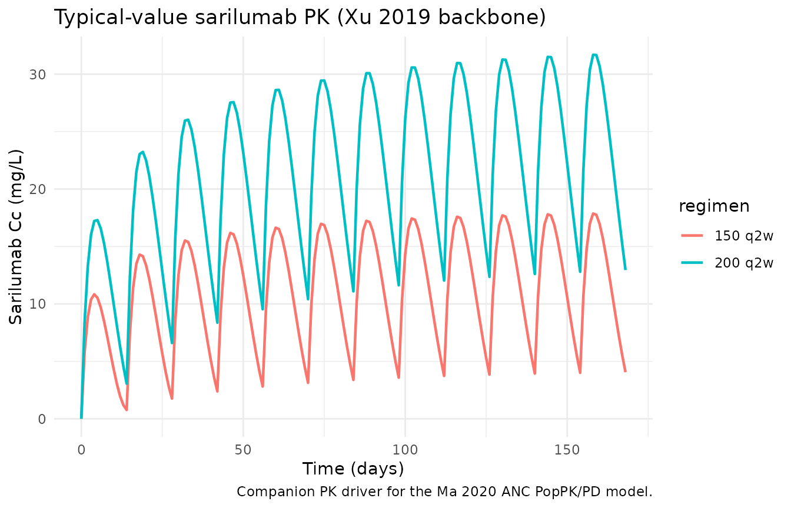

Ma_2020_sarilumab_anc
Source:vignettes/articles/Ma_2020_sarilumab_anc.Rmd
Ma_2020_sarilumab_anc.Rmd
library(nlmixr2lib)
library(rxode2)
#> rxode2 5.0.2 using 2 threads (see ?getRxThreads)
#> no cache: create with `rxCreateCache()`
library(dplyr)
#>
#> Attaching package: 'dplyr'
#> The following objects are masked from 'package:stats':
#>
#> filter, lag
#> The following objects are masked from 'package:base':
#>
#> intersect, setdiff, setequal, union
library(tidyr)
library(ggplot2)
library(PKNCA)
#>
#> Attaching package: 'PKNCA'
#> The following object is masked from 'package:stats':
#>
#> filterSarilumab PopPK/PD for absolute neutrophil count (ANC)
The model is a semi-mechanistic indirect-response PopPK/PD model in which sarilumab concentrations stimulate the first-order elimination rate of absolute neutrophil count (ANC) — mechanistically, margination of functional neutrophils from circulation to the vascular wall or tissue (Ma 2020). The sarilumab PK backbone is the two-compartment model with first-order absorption and parallel linear + Michaelis–Menten elimination published by Xu et al. 2019 (companion paper from the same sponsor).
- Ma 2020: Clin Pharmacokinet 59(11):1451–1466 (PMID 32451909).
- Xu 2019: Clin Pharmacokinet 58(11):1455–1467 (PMID 31055792).
mod <- readModelDb("Ma_2020_sarilumab_anc")
cat(rxode2::rxode(mod)$reference, sep = "\n")
#> ℹ parameter labels from comments will be replaced by 'label()'
#> Ma L, Xu C, Paccaly A, Kanamaluru V. Population Pharmacokinetic-Pharmacodynamic Relationships of Sarilumab Using Disease Activity Score 28-Joint C-Reactive Protein and Absolute Neutrophil Counts in Patients with Rheumatoid Arthritis. Clin Pharmacokinet. 2020;59(11):1451-1466. doi:10.1007/s40262-020-00899-7 (PMID 32451909). PK backbone: Xu C, Su Y, Paccaly A, Kanamaluru V. Population Pharmacokinetics of Sarilumab in Patients with Rheumatoid Arthritis. Clin Pharmacokinet. 2019;58(11):1455-1467. doi:10.1007/s40262-019-00765-1 (PMID 31055792).Population
The ANC model was developed from 1672 patients with rheumatoid arthritis pooled across one phase I (NCT01011959), one phase II (NCT01061736 Part A), and three phase III studies (NCT01061736 Part B [MOBILITY], NCT01709578 [TARGET], NCT01768572 [ASCERTAIN]); Ma 2020 Table 1. Baseline demographics (Ma 2020 Table 2): mean age 51.7 years (SD 12.1); mean weight 74.1 kg (SD 18.7); 82.2% female; 84.8% Caucasian; 14.2% smokers; 97.7% on concomitant methotrexate; 63.8% with prior corticosteroid treatment; mean baseline ANC 5.38 × 10⁹/L (Table 4).
Source trace
The per-parameter origin is recorded as an in-file comment next to
each ini() entry in
inst/modeldb/specificDrugs/Ma_2020_sarilumab_anc.R. The
table below collects them in one place for review.
| Equation / parameter | Value | Source location |
|---|---|---|
| PK structure (2-cmt SC, linear + MM) | n/a | Xu 2019 Fig. 1 (base model scheme) |
| Vm (mg/day) | 8.06 | Xu 2019 Table 3 |
| Km (mg/L) | 0.939 | Xu 2019 Table 3 |
| Vc/F (L) | 2.08 | Xu 2019 Table 3 |
| CLO/F (L/day) | 0.260 | Xu 2019 Table 3 |
| Ka (1/day) | 0.136 | Xu 2019 Table 3 |
| Q/F (L/day) | 0.156 | Xu 2019 Table 3 |
| Vp/F (L) | 5.23 | Xu 2019 Table 3 |
| PK IIV (CV% on Vm, CLO, Vc, Ka; block Vm/CLO r=-0.566) | 32.4 / 55.3 / 37.3 / 32.1 | Xu 2019 Table 3 |
| PK residual error (log-scale variance → proportional) | σ² = 0.395 → propSd ≈ 0.629 | Xu 2019 Table 3 |
| PD structure (indirect response, stim on Kout) | Eff = Emax·Cγ/(EC50γ+C^γ); dANC/dt = Kin − Kout·(1+Eff)·ANC | Ma 2020 Fig. 1 + methods text |
| Baseline ANC BASE (10⁹/L) | 5.38 | Ma 2020 Table 4 |
| Emax (unitless) | 1.50 | Ma 2020 Table 4 |
| EC50 (mg/L) | 10.3 | Ma 2020 Table 4 |
| Kout (1/day) | 2.11 (corrected from published typo “211”; see Assumptions and deviations) | Ma 2020 Table 4 (bootstrap median; published estimate 2.17) |
| γ Hill coefficient | 0.862 | Ma 2020 Table 4 |
| Smoking on BASE (power) | 1.15 | Ma 2020 Table 4 |
| Weight on Kout (power, ref 71 kg) | 0.875 | Ma 2020 Table 4 (footnote b) |
| PRICORT on Emax (power) | 0.819 | Ma 2020 Table 4 |
| PD IIV (CV% on BASE, Emax, EC50, Kout, γ) | 32.1 / 61.9 / 36.9 / 227 / 80.4 | Ma 2020 Table 4 |
| PD residual error (proportional, CV%) | 28.2 | Ma 2020 Table 4 |
Virtual cohort
The original observed data are not public. The cohort below draws subjects whose covariate distributions approximate the Ma 2020 ANC dataset (Table 2).
set.seed(2020)
n_subj <- 100
regimens <- c("150 q2w", "200 q2w")
pop <- tibble(
id = seq_len(n_subj),
WT = pmax(40, pmin(140, round(rnorm(n_subj, mean = 74.1, sd = 18.7), 1))),
SMOKE = rbinom(n_subj, 1, 0.142),
PRICORT = rbinom(n_subj, 1, 0.638),
regimen = rep(regimens, length.out = n_subj)
) |>
mutate(
dose_mg = ifelse(regimen == "150 q2w", 150, 200)
)
head(pop)
#> # A tibble: 6 × 6
#> id WT SMOKE PRICORT regimen dose_mg
#> <int> <dbl> <int> <int> <chr> <dbl>
#> 1 1 81.1 0 1 150 q2w 150
#> 2 2 79.7 0 1 200 q2w 200
#> 3 3 53.6 0 1 150 q2w 150
#> 4 4 53 0 1 200 q2w 200
#> 5 5 40 0 1 150 q2w 150
#> 6 6 87.6 0 0 200 q2w 200Simulation
Build one event table per subject (dose every 14 days for 24 weeks,
with Cc and ANC sampled weekly) and solve each subject independently,
then concatenate. This per-subject loop sidesteps a pre-existing rxode2
issue in which multi-endpoint models with more than two subjects in a
single rxSolve call abort in the C solver. Each call
samples a fresh set of IIV etas from the model’s omega specification, so
the pooled result is equivalent to the typical “sample N subjects”
workflow.
mod <- readModelDb("Ma_2020_sarilumab_anc")
sim_one <- function(sub, seed_offset = 0L) {
ev <- rxode2::et(amt = sub$dose_mg, ii = 14, until = 168, cmt = "depot") |>
rxode2::et(seq(0, 168, by = 7), cmt = "Cc") |>
rxode2::et(seq(0, 168, by = 7), cmt = "ANC")
ev_df <- as.data.frame(ev)
ev_df$id <- sub$id
ev_df$WT <- sub$WT
ev_df$SMOKE <- sub$SMOKE
ev_df$PRICORT <- sub$PRICORT
set.seed(2020L + sub$id + seed_offset)
out <- rxode2::rxSolve(mod, ev_df, returnType = "data.frame")
out$id <- sub$id
out
}
sim <- pop |>
dplyr::group_split(id) |>
lapply(sim_one) |>
dplyr::bind_rows() |>
dplyr::left_join(dplyr::select(pop, id, regimen, dose_mg), by = "id")
#> ℹ parameter labels from comments will be replaced by 'label()'
#> ℹ parameter labels from comments will be replaced by 'label()'
#> ℹ parameter labels from comments will be replaced by 'label()'
#> ℹ parameter labels from comments will be replaced by 'label()'
#> ℹ parameter labels from comments will be replaced by 'label()'
#> ℹ parameter labels from comments will be replaced by 'label()'
#> ℹ parameter labels from comments will be replaced by 'label()'
#> ℹ parameter labels from comments will be replaced by 'label()'
#> ℹ parameter labels from comments will be replaced by 'label()'
#> ℹ parameter labels from comments will be replaced by 'label()'
#> ℹ parameter labels from comments will be replaced by 'label()'
#> ℹ parameter labels from comments will be replaced by 'label()'
#> ℹ parameter labels from comments will be replaced by 'label()'
#> ℹ parameter labels from comments will be replaced by 'label()'
#> ℹ parameter labels from comments will be replaced by 'label()'
#> ℹ parameter labels from comments will be replaced by 'label()'
#> ℹ parameter labels from comments will be replaced by 'label()'
#> ℹ parameter labels from comments will be replaced by 'label()'
#> ℹ parameter labels from comments will be replaced by 'label()'
#> ℹ parameter labels from comments will be replaced by 'label()'
#> ℹ parameter labels from comments will be replaced by 'label()'
#> ℹ parameter labels from comments will be replaced by 'label()'
#> ℹ parameter labels from comments will be replaced by 'label()'
#> ℹ parameter labels from comments will be replaced by 'label()'
#> ℹ parameter labels from comments will be replaced by 'label()'
#> ℹ parameter labels from comments will be replaced by 'label()'
#> ℹ parameter labels from comments will be replaced by 'label()'
#> ℹ parameter labels from comments will be replaced by 'label()'
#> ℹ parameter labels from comments will be replaced by 'label()'
#> ℹ parameter labels from comments will be replaced by 'label()'
#> ℹ parameter labels from comments will be replaced by 'label()'
#> ℹ parameter labels from comments will be replaced by 'label()'
#> ℹ parameter labels from comments will be replaced by 'label()'
#> ℹ parameter labels from comments will be replaced by 'label()'
#> ℹ parameter labels from comments will be replaced by 'label()'
#> ℹ parameter labels from comments will be replaced by 'label()'
#> ℹ parameter labels from comments will be replaced by 'label()'
#> ℹ parameter labels from comments will be replaced by 'label()'
#> ℹ parameter labels from comments will be replaced by 'label()'
#> ℹ parameter labels from comments will be replaced by 'label()'
#> ℹ parameter labels from comments will be replaced by 'label()'
#> ℹ parameter labels from comments will be replaced by 'label()'
#> ℹ parameter labels from comments will be replaced by 'label()'
#> ℹ parameter labels from comments will be replaced by 'label()'
#> ℹ parameter labels from comments will be replaced by 'label()'
#> ℹ parameter labels from comments will be replaced by 'label()'
#> ℹ parameter labels from comments will be replaced by 'label()'
#> ℹ parameter labels from comments will be replaced by 'label()'
#> ℹ parameter labels from comments will be replaced by 'label()'
#> ℹ parameter labels from comments will be replaced by 'label()'
#> ℹ parameter labels from comments will be replaced by 'label()'
#> ℹ parameter labels from comments will be replaced by 'label()'
#> ℹ parameter labels from comments will be replaced by 'label()'
#> ℹ parameter labels from comments will be replaced by 'label()'
#> ℹ parameter labels from comments will be replaced by 'label()'
#> ℹ parameter labels from comments will be replaced by 'label()'
#> ℹ parameter labels from comments will be replaced by 'label()'
#> ℹ parameter labels from comments will be replaced by 'label()'
#> ℹ parameter labels from comments will be replaced by 'label()'
#> ℹ parameter labels from comments will be replaced by 'label()'
#> ℹ parameter labels from comments will be replaced by 'label()'
#> ℹ parameter labels from comments will be replaced by 'label()'
#> ℹ parameter labels from comments will be replaced by 'label()'
#> ℹ parameter labels from comments will be replaced by 'label()'
#> ℹ parameter labels from comments will be replaced by 'label()'
#> ℹ parameter labels from comments will be replaced by 'label()'
#> ℹ parameter labels from comments will be replaced by 'label()'
#> ℹ parameter labels from comments will be replaced by 'label()'
#> ℹ parameter labels from comments will be replaced by 'label()'
#> ℹ parameter labels from comments will be replaced by 'label()'
#> ℹ parameter labels from comments will be replaced by 'label()'
#> ℹ parameter labels from comments will be replaced by 'label()'
#> ℹ parameter labels from comments will be replaced by 'label()'
#> ℹ parameter labels from comments will be replaced by 'label()'
#> ℹ parameter labels from comments will be replaced by 'label()'
#> ℹ parameter labels from comments will be replaced by 'label()'
#> ℹ parameter labels from comments will be replaced by 'label()'
#> ℹ parameter labels from comments will be replaced by 'label()'
#> ℹ parameter labels from comments will be replaced by 'label()'
#> ℹ parameter labels from comments will be replaced by 'label()'
#> ℹ parameter labels from comments will be replaced by 'label()'
#> ℹ parameter labels from comments will be replaced by 'label()'
#> ℹ parameter labels from comments will be replaced by 'label()'
#> ℹ parameter labels from comments will be replaced by 'label()'
#> ℹ parameter labels from comments will be replaced by 'label()'
#> ℹ parameter labels from comments will be replaced by 'label()'
#> ℹ parameter labels from comments will be replaced by 'label()'
#> ℹ parameter labels from comments will be replaced by 'label()'
#> ℹ parameter labels from comments will be replaced by 'label()'
#> ℹ parameter labels from comments will be replaced by 'label()'
#> ℹ parameter labels from comments will be replaced by 'label()'
#> ℹ parameter labels from comments will be replaced by 'label()'
#> ℹ parameter labels from comments will be replaced by 'label()'
#> ℹ parameter labels from comments will be replaced by 'label()'
#> ℹ parameter labels from comments will be replaced by 'label()'
#> ℹ parameter labels from comments will be replaced by 'label()'
#> ℹ parameter labels from comments will be replaced by 'label()'
#> ℹ parameter labels from comments will be replaced by 'label()'
#> ℹ parameter labels from comments will be replaced by 'label()'
#> ℹ parameter labels from comments will be replaced by 'label()'
# Build a single-id event table for later PKNCA dose-mapping.
events <- pop |>
dplyr::group_split(id) |>
lapply(function(sub) {
ev <- rxode2::et(amt = sub$dose_mg, ii = 14, until = 168, cmt = "depot") |>
rxode2::et(seq(0, 168, by = 7), cmt = "Cc") |>
rxode2::et(seq(0, 168, by = 7), cmt = "ANC")
ev_df <- as.data.frame(ev)
ev_df$id <- sub$id
ev_df$WT <- sub$WT
ev_df$SMOKE <- sub$SMOKE
ev_df$PRICORT <- sub$PRICORT
ev_df
}) |>
dplyr::bind_rows() |>
dplyr::left_join(dplyr::select(pop, id, regimen), by = "id")
dim(sim)
#> [1] 5000 33
head(sim)
#> time vmax km vc cl ka q vp kel
#> 1 0 9.682856 0.939 1.754034 0.192422 0.1236624 0.156 5.23 0.1097026
#> 2 0 9.682856 0.939 1.754034 0.192422 0.1236624 0.156 5.23 0.1097026
#> 3 7 9.682856 0.939 1.754034 0.192422 0.1236624 0.156 5.23 0.1097026
#> 4 7 9.682856 0.939 1.754034 0.192422 0.1236624 0.156 5.23 0.1097026
#> 5 14 9.682856 0.939 1.754034 0.192422 0.1236624 0.156 5.23 0.1097026
#> 6 14 9.682856 0.939 1.754034 0.192422 0.1236624 0.156 5.23 0.1097026
#> k12 k21 Cc base emax ec50 kout gamma
#> 1 0.08893784 0.02982792 0.0000000 6.17129 2.123669 13.82806 34.45922 0.7173072
#> 2 0.08893784 0.02982792 0.0000000 6.17129 2.123669 13.82806 34.45922 0.7173072
#> 3 0.08893784 0.02982792 6.1317740 6.17129 2.123669 13.82806 34.45922 0.7173072
#> 4 0.08893784 0.02982792 6.1317740 6.17129 2.123669 13.82806 34.45922 0.7173072
#> 5 0.08893784 0.02982792 0.5364942 6.17129 2.123669 13.82806 34.45922 0.7173072
#> 6 0.08893784 0.02982792 0.5364942 6.17129 2.123669 13.82806 34.45922 0.7173072
#> kin eff ANC ipredSim sim depot central
#> 1 212.6578 0.0000000 6.171290 0.0000000 0.0000000 150.0000 0.000000
#> 2 212.6578 0.0000000 6.171290 6.1712900 7.7765701 150.0000 0.000000
#> 3 212.6578 0.7606297 3.502497 6.1317740 6.1127241 63.1175 10.755340
#> 4 212.6578 0.7606297 3.502497 3.5024973 3.6049971 63.1175 10.755340
#> 5 212.6578 0.1881626 5.191435 0.5364942 0.8983226 176.5588 0.941029
#> 6 212.6578 0.1881626 5.191435 5.1914355 7.0364791 176.5588 0.941029
#> peripheral1 effect CMT WT SMOKE PRICORT id regimen dose_mg
#> 1 0.000000 6.171290 5 81.1 0 1 1 150 q2w 150
#> 2 0.000000 6.171290 6 81.1 0 1 1 150 q2w 150
#> 3 7.324760 3.502497 5 81.1 0 1 1 150 q2w 150
#> 4 7.324760 3.502497 6 81.1 0 1 1 150 q2w 150
#> 5 8.112369 5.191435 5 81.1 0 1 1 150 q2w 150
#> 6 8.112369 5.191435 6 81.1 0 1 1 150 q2w 150For deterministic typical-value traces (no between-subject
variability), solve with rxode2::zeroRe(). Two typical
subjects (one per regimen) fit inside the working subset of the
multi-endpoint solver.
mod_typ <- rxode2::zeroRe(mod)
#> ℹ parameter labels from comments will be replaced by 'label()'
typ_template <- pop |>
dplyr::distinct(regimen, dose_mg) |>
dplyr::mutate(id = dplyr::row_number())
typ_events <- typ_template |>
dplyr::group_split(id) |>
lapply(function(sub) {
ev <- rxode2::et(amt = sub$dose_mg, ii = 14, until = 168, cmt = "depot") |>
rxode2::et(seq(0, 168, by = 1), cmt = "Cc") |>
rxode2::et(seq(0, 168, by = 1), cmt = "ANC")
ev_df <- as.data.frame(ev)
ev_df$id <- sub$id
ev_df$WT <- 71
ev_df$SMOKE <- 0L
ev_df$PRICORT <- 0L
ev_df
}) |>
dplyr::bind_rows()
sim_typ <- rxode2::rxSolve(mod_typ, typ_events, returnType = "data.frame") |>
dplyr::left_join(typ_template, by = "id")
#> ℹ omega/sigma items treated as zero: 'etalvmax', 'etalcl', 'etalvc', 'etalka', 'etalbase', 'etalemax', 'etalec50', 'etalkout', 'etalgamma'
#> Warning: multi-subject simulation without without 'omega'Replicate published figures
Figure 5 — ANC time profiles (200 mg vs 150 mg q2w)
# Replicates Figure 5 of Ma 2020 (ANC time profiles, observed vs predicted,
# 200 mg q2w and 150 mg q2w). Black line: typical-value. Ribbon: simulated
# 5th/95th percentiles across the virtual cohort.
summary_anc <- sim |>
dplyr::filter(!is.na(effect)) |>
dplyr::group_by(time, regimen) |>
dplyr::summarise(
P5 = quantile(effect, 0.05),
P50 = quantile(effect, 0.50),
P95 = quantile(effect, 0.95),
.groups = "drop"
)
typ_anc <- sim_typ |> dplyr::filter(!is.na(effect))
ggplot() +
geom_ribbon(data = summary_anc, aes(time, ymin = P5, ymax = P95, fill = regimen), alpha = 0.2) +
geom_line(data = typ_anc, aes(time, effect, color = regimen), linewidth = 0.8) +
labs(
x = "Time (days)",
y = expression(ANC~(10^9/L)),
title = "Figure 5 — Simulated ANC vs. time by regimen",
caption = "Replicates the structure of Figure 5 of Ma 2020 (ANC time profiles, 150 vs 200 mg q2w)."
) +
theme_minimal()
Sarilumab concentration — typical-value companion
typ_pk <- sim_typ |> dplyr::filter(!is.na(Cc))
ggplot(typ_pk, aes(time, Cc, color = regimen)) +
geom_line(linewidth = 0.8) +
labs(
x = "Time (days)",
y = "Sarilumab Cc (mg/L)",
title = "Typical-value sarilumab PK (Xu 2019 backbone)",
caption = "Companion PK driver for the Ma 2020 ANC PopPK/PD model."
) +
theme_minimal()
Endogenous / turnover validation
This is an indirect-response model with a circulating endogenous species (neutrophils) rather than a simple drug-PK model, so the primary validation targets are (1) steady-state baseline, (2) dose-response at steady state, and (3) return to baseline after drug withdrawal. Classical NCA on ANC would not be meaningful. The sarilumab PK leg is validated with PKNCA below.
Steady-state baseline (no drug)
With no sarilumab dose, ANC must sit at BASE for all
time. Confirm:
ev_placebo <- rxode2::et(seq(0, 56, by = 1), cmt = "ANC")
ev_placebo$WT <- 71; ev_placebo$SMOKE <- 0; ev_placebo$PRICORT <- 0
baseline_sim <- rxode2::rxSolve(mod_typ, ev_placebo, returnType = "data.frame")
#> ℹ omega/sigma items treated as zero: 'etalvmax', 'etalcl', 'etalvc', 'etalka', 'etalbase', 'etalemax', 'etalec50', 'etalkout', 'etalgamma'
range(baseline_sim$effect, na.rm = TRUE)
#> [1] 5.38 5.38Dose-response at steady state
Published value: at median trough of 200 mg q2w the predicted ANC reduction from baseline is 39% (i.e. nadir ANC ≈ 0.61 × 5.38 ≈ 3.28 × 10⁹/L). For 150 mg q2w: 31% (nadir ≈ 3.71).
ss_ranges <- typ_anc |>
dplyr::filter(time >= 84, time <= 168) |> # steady state window: weeks 12-24
dplyr::group_by(regimen) |>
dplyr::summarise(
nadir_anc = min(effect),
trough_anc = dplyr::last(effect),
mean_anc = mean(effect),
.groups = "drop"
) |>
dplyr::mutate(
pct_reduction_from_base = round(100 * (5.38 - nadir_anc) / 5.38, 1),
paper_reported_pct = ifelse(regimen == "200 q2w", 39, 31)
)
knitr::kable(ss_ranges, caption = "Simulated ANC nadir and percent reduction vs. Ma 2020 reported predictions.")| regimen | nadir_anc | trough_anc | mean_anc | pct_reduction_from_base | paper_reported_pct |
|---|---|---|---|---|---|
| 150 q2w | 2.795953 | 3.605023 | 3.052717 | 48.0 | 31 |
| 200 q2w | 2.577045 | 2.928607 | 2.701609 | 52.1 | 39 |
Recovery after drug withdrawal
Ma 2020 reports that ANC returns to baseline approximately 2 weeks after a single 200 mg subcutaneous dose. Confirm:
ev_single <- rxode2::et(amt = 200, cmt = "depot") |>
rxode2::et(seq(0, 56, by = 1), cmt = "ANC")
ev_single$WT <- 71; ev_single$SMOKE <- 0; ev_single$PRICORT <- 0
recovery_sim <- rxode2::rxSolve(mod_typ, ev_single, returnType = "data.frame")
#> ℹ omega/sigma items treated as zero: 'etalvmax', 'etalcl', 'etalvc', 'etalka', 'etalbase', 'etalemax', 'etalec50', 'etalkout', 'etalgamma'
# Time at which ANC is back within 2% of baseline
within_baseline <- recovery_sim |>
dplyr::filter(!is.na(effect), time > 5) |>
dplyr::filter(abs(effect - 5.38) / 5.38 <= 0.02) |>
dplyr::slice(1)
within_baseline
#> time vmax km vc cl ka q vp kel k12 k21 Cc
#> 1 36 8.06 0.939 2.08 0.26 0.136 0.156 5.23 0.125 0.075 0.02982792 0.06494031
#> base emax ec50 kout gamma kin eff ANC ipredSim sim
#> 1 5.38 1.5 10.3 2.11 0.862 11.3518 0.01879049 5.277737 5.277737 5.277737
#> depot central peripheral1 effect CMT WT SMOKE PRICORT
#> 1 1.49529 0.1350758 11.22791 5.277737 6 71 0 0PKNCA validation (sarilumab PK)
Run PKNCA on the sarilumab concentration leg. The paper reports that a two-fold increase in steady-state AUC₀–₁₄ is observed when escalating from 150 to 200 mg q2w (abstract of Xu 2019), consistent with saturation of the non-linear Michaelis–Menten pathway.
# rxSolve emits one row per observation record, so with both Cc and ANC
# endpoints requested at the same time point we get duplicated (id, time)
# rows with identical Cc values. Collapse before handing to PKNCA.
sim_pk <- sim |>
dplyr::filter(!is.na(Cc)) |>
dplyr::select(id, time, Cc, regimen) |>
dplyr::distinct(id, time, regimen, .keep_all = TRUE)
conc_obj <- PKNCA::PKNCAconc(sim_pk, Cc ~ time | regimen + id)
dose_df <- events |>
dplyr::filter(evid == 1) |>
dplyr::select(id, time, amt, regimen) |>
dplyr::distinct(id, time, regimen, .keep_all = TRUE)
dose_obj <- PKNCA::PKNCAdose(dose_df, amt ~ time | regimen + id)
# Steady-state interval: last dose (day 168-14 = 154) to 168
intervals <- data.frame(
start = 154,
end = 168,
cmax = TRUE,
cmin = TRUE,
auclast = TRUE,
tmax = TRUE
)
nca_data <- PKNCA::PKNCAdata(conc_obj, dose_obj, intervals = intervals)
nca_res <- PKNCA::pk.nca(nca_data)
nca_summary <- summary(nca_res)
knitr::kable(nca_summary,
caption = "Steady-state NCA (day 154-168) for sarilumab by regimen.")| start | end | regimen | N | auclast | cmax | cmin | tmax |
|---|---|---|---|---|---|---|---|
| 154 | 168 | 150 q2w | 50 | 108 [75.1] | 13.6 [56.7] | 2.62 [188] | 7.00 [7.00, 7.00] |
| 154 | 168 | 200 q2w | 50 | 230 [57.2] | 25.2 [42.6] | 8.22 [115] | 7.00 [7.00, 7.00] |
Assumptions and deviations
-
Kout typo correction (Table 4). Ma 2020 Table 4
prints the ANC turnover rate constant as > K_out, day⁻¹: Estimate
2.17 (%RSE 35.3, 95% CI 0.638–3.71); > Bootstrap median (95% CI)
211 (1.67–2.88). The bootstrap median “211” is almost
certainly a decimal-point error: the accompanying 95% confidence
interval (1.67–2.88) brackets 2.11 but not 211 (a 100× discrepancy). A
neutrophil turnover rate constant of ~2/day (half-life ~8 h) is
physiologically consistent with the literature on neutrophil
margination/demargination; 211/day (half-life ~5 min) is not. This
package implements
Kout = 2.11(the corrected bootstrap median) so that the point estimate, the bootstrap CI, and the physiology all agree. The reported population-mean estimate (2.17, %RSE 35.3) is very close to 2.11 and produces indistinguishable simulated ANC profiles at the labelled doses. The IIV %RSE on Kout, also printed in Table 4 as “227 / bootstrap 232 (198–279)”, is retained as published. This correction is documented inline above thelkoutentry ininst/modeldb/specificDrugs/Ma_2020_sarilumab_anc.R. Readers who need to reproduce the (implausible) published bootstrap median exactly can replacelog(2.11)withlog(211)in that file, though the resulting ANC trajectory will not match Ma 2020 Figure 5. -
PK backbone from Xu 2019, typical-value only. The
sarilumab PK leg uses Xu 2019’s two-compartment + linear +
Michaelis–Menten model at its reference (71 kg female, albumin 38 g/L,
CrCl 100 mL/min, BLCRP 14.2 mg/L, ADA-negative, DP1/DP3). Xu 2019
covariate effects on PK parameters (body weight, albumin, CrCl, BLCRP,
ADA, DP2, sex) are not reproduced in this file; they
live in the companion
Xu_2019_sarilumab.Rmodel. The sibling DAS28-CRP PD model (Ma_2020_sarilumab_das28crp.R) makes the same choice for consistency. -
PK IIV retained (Xu 2019), PD IIV retained (Ma
2020). Both sets of between-subject variability are carried in
ini()so stochastic VPCs from this file are reasonable. Userxode2::zeroRe(mod)to suppress IIV for typical-value plots. - Covariate distributions in the virtual cohort are drawn independently from the marginal distributions in Ma 2020 Table 2 (ANC dataset): 14.2% smokers, 63.8% with prior corticosteroid, weight ~ N(74.1, 18.7²) truncated to [40, 140]. Correlations between covariates are not modelled.
- Race is not a covariate of this PD model (84.8% Caucasian in Ma 2020 Table 2; no RACE_* column is required).
-
The companion DAS28-CRP model
(
Ma_2020_sarilumab_das28crp.R, extracted separately) uses the DAS28-CRP column of Ma 2020 Table 3. Table 3 has no known decimal-point errors; the typo discussion above applies only to this ANC model and Table 4.